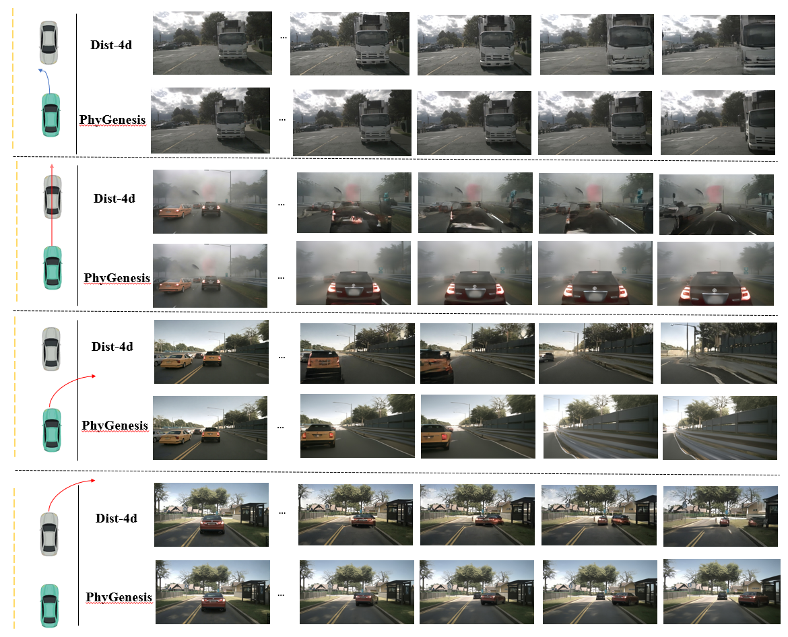
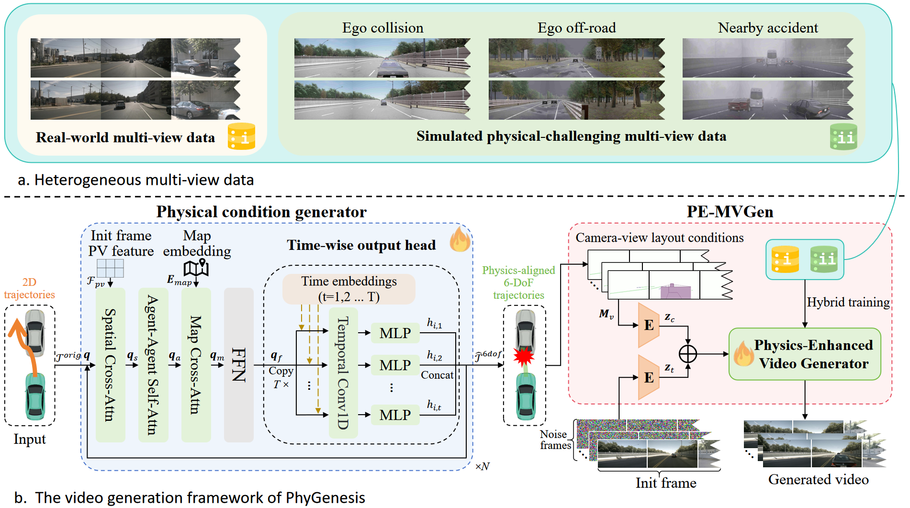
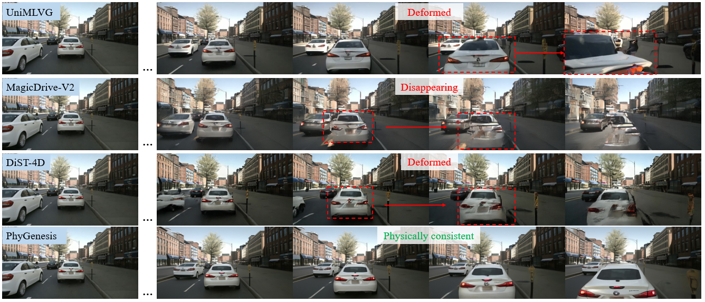
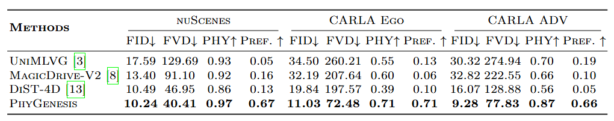
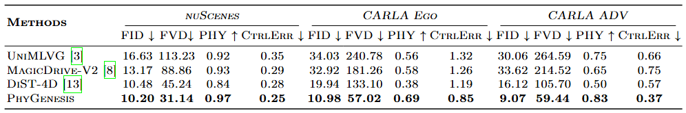

Video generation models have shown strong potential as world models for autonomous driving simulation. However, existing approaches are primarily trained on real-world driving datasets, which mostly contain natural and safe driving scenarios. As a result, current models often fail when conditioned on challenging or counterfactual trajectories - such as imperfect trajectories generated by simulators or planning systems - producing videos with severe physical inconsistencies and artifacts.
To address this limitation, we propose PhyGenesis, a world model designed to generate driving videos with high visual fidelity and strong physical consistency. Our framework consists of two key components: (1) a physical condition generator that transforms potentially invalid trajectory inputs into physically plausible conditions, and (2) a physics-enhanced video generator that produces high-fidelity multi-view driving videos under these conditions.
To effectively train these components, we construct a large-scale, physics-rich heterogeneous dataset. Specifically, in addition to real-world driving videos, we generate diverse challenging driving scenarios using the CARLA simulator, from which we derive supervision signals that guide the model to learn physically grounded dynamics under extreme conditions. This challenging-trajectory learning strategy enables trajectory correction and promotes physically consistent video generation. Extensive experiments demonstrate that PhyGenesis consistently outperforms state-of-the-art methods, especially on challenging trajectories.

Qualitative comparison of video generation under diverse trajectory conditions (front view of the multi-view outputs is shown). Prior methods (e.g., DiST-4D) exhibit artifacts and geometric distortions under physically challenging trajectories, whereas PhyGenesis preserves physical consistency and high visual fidelity.
PhyGenesis is a unified framework composed of a Physical Condition Generator and a Physics-Enhanced Video Generator. When presented with potentially physically-violating trajectories, the condition generator acts as a rectifier mapping them into valid physically consistent scenarios, avoiding unrealistic overlapping geometries. The rectified layouts, guided by textual and visual conditions, are then fed into a sequence of modified spatial-temporal blocks, capturing real-world dynamics and generating high-fidelity visual outputs, successfully simulating extreme driving scenarios.

We visually compare PhyGenesis with DiST-4D under various challenging and counterfactual driving configurations. When faced with invalid or extreme planning inputs (e.g., ego collision, off-road inputs, nearby accidents), previous state-of-the-art models suffer from missing actors, geometric deformations, or background collapse. Our physical condition generator reliably corrects anomalous situations, ensuring that the Physics-Enhanced Video Generator maintains highly realistic global consistency.

We visually compare PhyGenesis with the highly competitive baseline MagicDriveV2 under various realistic and challenging driving events.
The Physical Condition Generator effectively rectifies unfeasible or challenging spatial layout conditions into a valid structure suitable for generation, thereby significantly extending the ability to model boundary configurations safely.
By exploiting the CARLA simulation to learn varied geometric and appearance features, our model can tackle long-tail physical phenomena without visual collapse. Incorporating structured heterogeneous datasets acts directly to improve physical realism.
Extensive experiments demonstrate that PhyGenesis achieves state-of-the-art results compared directly with multiple competitive approaches on both multi-view and single-view generation configurations, evaluating against FID, FVD, and physical consistency collision evaluation metrics.
Table 1 presents the evaluation under 2D trajectory inputs. The Carla ego and Carla adv settings involve challenging, physics-violating trajectory inputs. This table compares the overall robustness and performance of the entire framework.

Table 2 presents the evaluation under Ground Truth (GT) trajectories, fully comparing the fundamental capabilities of the video generation models themselves without input trajectory errors.
